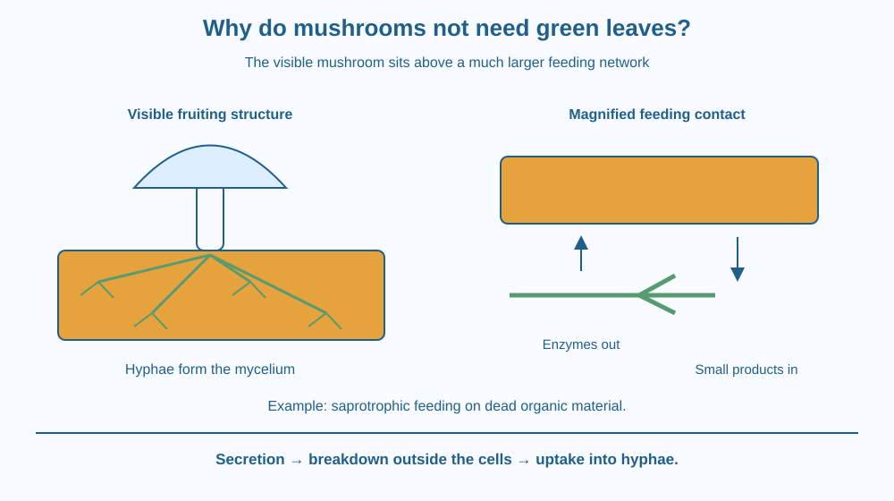

Explain how a mushroom-forming fungus can obtain nutrients without green leaves. Identify hyphae, mycelium and saprotrophic nutrition. Distinguish the visible mushroom from the more extensive feeding network and avoid assuming that all fungi have exactly the same relationships.
After damp weather, a mushroom appears beside decaying wood. It seems to arrive suddenly, like a little umbrella pushed out of the ground. There are no broad leaves collecting light, and its cap does not look like a root system.
The visible mushroom is not the entire organism. Much of the fungus can already exist as a network of fine threads within the material below. To explain how it gets nutrients, look at that hidden network and the surrounding material rather than treating the cap as a tiny green plant with missing leaves.
Fungi form a different biological group from green plants. They do not obtain their carbon by the leaf-based photosynthetic process familiar from green crops. Instead they acquire organic materials from other sources. The precise source depends on the kind of fungus.
The body of many fungi includes fine filaments called hyphae. A branching collection of hyphae is a mycelium. This network can spread through wood, leaf litter, soil or another suitable material. Its fine branches create extensive contact with the surroundings.
In saprotrophic nutrition, an organism obtains nutrients from dead organic material. Many mushroom-forming fungi use this approach. The hyphae release enzymes into the material around them. These molecules help break large organic compounds into smaller products that can be absorbed.
The sequence matters: secretion happens outside the feeding cells, breakdown occurs in the surroundings, and suitable small products are then taken in. The fungus does not swallow a whole piece of log into a stomach. Its feeding surface works directly against the material it occupies.
A broad network is useful because a piece of wood does not deliver nutrients to one central mouth. Hyphae can extend into new regions, increasing access to material. The network is therefore a feeding structure as well as a means of occupying space.
The mushroom is a fruiting structure produced by certain fungi. Its appearance does not mean the organism only began existing that morning. The underlying network may have been growing before conditions supported the visible structure. Today we focus on the feeding network, not the details of reproduction.
Not every mushroom-forming fungus feeds on dead material in the same way. Some fungi form partnerships with living plants, and some are parasites. Therefore a mushroom beside a tree is not enough evidence to identify its exact nutritional relationship.
Decay also depends on moisture, temperature, oxygen availability and the properties of the material. The correct conditions allow the network and its enzymes to function. A dry log and a damp log need not change at the same rate, and a classroom description should not assign a universal time for decomposition.
Imagine a branching network laid across a large loaf-shaped block. At many points the network releases tiny tools that free usable pieces from the block's surface. Those pieces enter the network nearby.
The branching lines represent hyphae. The tools represent enzymes, not teeth or hands. The released pieces represent smaller nutrient molecules, not necessarily visible crumbs. Keeping those meanings clear prevents the model from becoming misleading.
Draw a small mushroom above the network, but make the underground or internal branches much more extensive. Label the cap as a visible structure and the network as the main feeding contact in this example.
The SVG shows a mushroom above decaying wood and a larger network of hyphae inside it. A magnified contact region uses one arrow for enzyme release and another for uptake of smaller breakdown products.
The text zones distinguish mycelium, external breakdown and absorption. The arrows show two directions of exchange, so the illustration does not suggest that the fungus simply sucks intact wood into the cap.
The wood is a saprotrophic example. The diagram is not a claim that every mushroom, including every one found near a living tree, has this exact feeding relationship.

Cultivated edible mushrooms can be grown on suitable prepared agricultural materials. Different species require different substrates and conditions. The link is the feeding network: it accesses organic material in its surroundings, rather than depending on broad green leaves.
Fungal activity also contributes to the breakdown of fallen wood. That process changes how material moves through a landscape. This lesson stays with the mechanism at a hyphal feeding surface; the later soil lesson will examine the mixture of organic materials that develops in soil.
Wild mushrooms cannot be identified as safe to eat from a simple colour, shape or classroom diagram. Observation should use photographs rather than collecting unknown specimens for this activity.
Use paper, a pencil and several pieces of yarn or drawn branching lines. Do not grow mould or open mouldy food.
The paper pieces are a model, not an experiment demonstrating enzyme chemistry. Ask a partner to describe the order of secretion, external breakdown and uptake. Correct the drawing if it suggests that the cap swallows the block or that all uptake occurs at one point.
Why might a finely branching network obtain resources from a solid substrate more effectively than one thick strand with little branching? Consider how much of the substrate is contacted and how far the network can reach.
Now suppose the substrate dries. Distinguish having organic material present from having conditions that allow the fungus to use it. A food source can remain in place while growth becomes limited by the surroundings.
What is a branching collection of fungal hyphae called?
Answer: B — A mycelium is the network formed by branching fungal hyphae.
Why does a saprotrophic fungus release enzymes onto dead material?
Answer: A — External breakdown produces smaller materials that the fungus can absorb.
A mushroom appears overnight. What can you reasonably infer?
Answer: C — The visible mushroom can develop after a mycelium has already occupied the substrate.
Create an illustrated explanation titled “The mushroom you see is not the whole feeding system.” Include the words hyphae, mycelium, enzymes and uptake, each attached to a specific feature in the drawing.
Add one limitation: your example concerns a fungus using dead material, and other fungal relationships exist. Your explanation should stay focused on obtaining nutrients rather than repeating the earlier lesson on the microscopic organisms in a water drop.
A fungus can carry out important parts of feeding outside its own cells. This shifts the usual picture of a meal: the environment immediately around the hyphae becomes the place where large materials are broken down. Seeing the network explains more than looking only at the mushroom's umbrella-like outline.
A saprotrophic fungus releases enzymes from its hyphae, breaks down dead material outside its cells, and absorbs suitable smaller products.